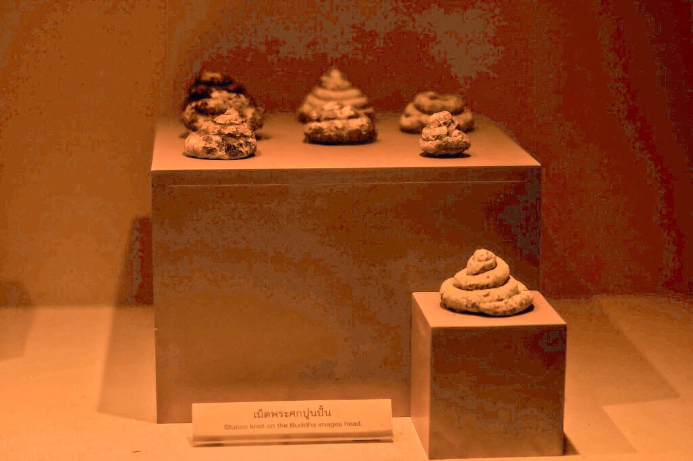

พิพิธภัณฑ์ศรีวิชัย

พิพิธภัณฑ์ศรีวิชัย ตั้งอยู่ภายในบริเวณวัดคูหาภิมุข มีวัตถุโบราณที่ขุดค้นได้จากถ้ำต่างๆ ในตำบลหน้าถ้ำ ได้แก่ ภูเขาวัดถ้ำ ภูเขากำปั่น กรมศิลปากรค้นพบพระพิมพ์ดินดิบ สมัยศรีวิชัย สถูป เม็ดพระศก อิฐฐานพระพุทธรูป ขวานหินขัด และบริเวณสนามบินท่าสาป ได้ค้นพบโคกอิฐ เนินดิน ซากกำแพงเมืองโบราณ เครื่องถ้วยชาม เทวรูปพระนารายณ์สำริด สูงประมาณ 1 ศอก (0.5 เมตร) พระพุทธรูปแกะสลักในแผ่นหินมีสภาพสมบูรณ์ จำนวน 3 องค์ กว้าง 21.50 เซนติเมตร สูง 30 เซนติเมตร สลักเป็นรูปนูนต่ำ รูปพระพุทธเจ้าประทับนั่ง ปางสมาธิ อีกองค์หนึ่งชำรุดครึ่งหนึ่ง มีแร่พระเศียร พระพุทธรูปสมัยศรีวิชัย สมัยสุโขทัย สมัยอู่ทอง พระพุทธรูปที่ค้นพบที่ถ้ำคนโท ที่เป็นพระพุทธรูปสลักในแผ่นหินมีอยู่ 3 องค์ องค์ที่สมบูรณ์ที่สุดสลักในแผ่นหินกว้าง 21.5 เซนติเมตร สูง 30 เซนติเมตร สลักเป็นรูปนูนต่ำรูปพระพุทธเจ้า ประทับนั่งแสดงปางสมาธิ ส่วนอีกรูปหนึ่งมีขนาดใกล้เคียงกัน แต่ชำรุดเสียครึ่งหนึ่ง มีแต่พระเศียร พระพุทธรูปสำริด ที่พบจากถ้ำคนโทมีจำนวนมากมาย ส่วนใหญ่ตกเป็นสมบัติเอกชน และไม่เป็นที่เปิดเผยว่าอยู่ที่ใดบ้าง ที่เป็นสมบัติของวัดคูหาภิมุข เพราะชาวบ้านนำมาถวาย ซึ่งมักจะไม่สมบูรณ์ มีทั้งที่เป็นแบบพระพุทธรูปสมัยสุโขทัย สมัยอู่ทอง บางองค์ก็สันนิษฐานว่า เป็นแบบศรีวิชัย แต่ยังไม่มีการยืนยันให้แน่นอนลงไปได้ เนื่องจากภูเขากำปั่นเป็นภูเขาหินอ่อนสีชมพู ซึ่งหาได้ยากมาก รัฐบาลจึงได้ให้สัมปทานแก่บริษัทเอกชนสำรวจทำหินอ่อนออกจำหน่าย ปัจจุบัน หินอ่อนสีชมพู จากยะลามีชื่อเสียงมาก แต่ในอนาคต ถ้ำสำเภา ถ้ำคนโท และเรื่องราวในอดีตเกี่ยวกับพระพุทธรูป พระพิมพ์ในภูเขาแห่งนี้คงจะสูญหายไปด้วย จากบันทึกของนักโบราณคดี นักประวัติศาสตร์ และนักวิชาการข้างต้นทำให้ทราบว่า พื้นที่จังหวัดยะลาบริเวณตำบลท่าสาป และตำบลหน้าถ้ำ เคยเป็นแหล่งชุมชนโบราณมาตั้งแต่สมัยก่อนประวัติศาสตร์ กลุ่มชนเหล่านี้ได้มีการติดต่อสัมพันธ์กัน และพัฒนาเรื่อยมาจนเข้าสู่สมัยแรกเริ่มประวัติศาสตร์
ย้อนกลับ